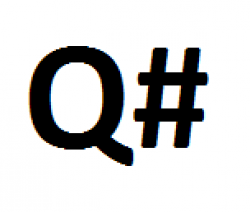

Query é uma solicitação de informações a um banco de dados. Mas não se trata de qualquer pergunta. Ela é baseada em um código pré-definido para obter as respostas que deseja. Podem ser usadas linguagens mais simples ou complexas.

Q# é uma linguagem de programação de domínio específico usada para expressar algoritmos quânticos. Ele foi inicialmente lançado para o público pela Microsoft como parte do Kit de Desenvolvimento Quantum